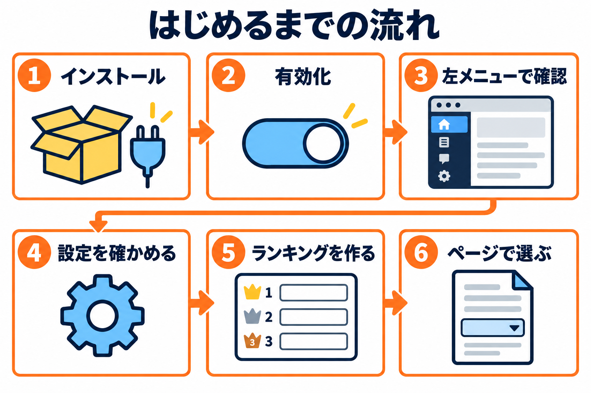
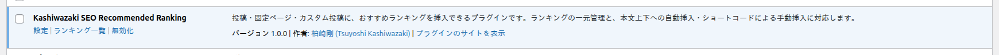
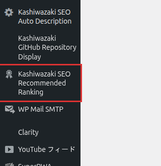

インストール・初期設定
プラグインのインストールから、最初のランキングを表示するまでを、ステップごとに説明します。

インストール
管理画面の左メニューから「プラグイン」→「新規追加」を開きます。
上の「プラグインのアップロード」をクリックし、プラグインの ZIP ファイルを選んで「今すぐインストール」をクリックします。
インストールが終わったら「プラグインを有効化」をクリックします。

左メニューで確認する
有効化すると、管理画面の左メニューに「Kashiwazaki SEO Recommended Ranking」が追加されます（メダルのようなアイコンです）。クリックすると、ランキング一覧が開きます。

左メニューに出る項目は、このプラグインの 1 つだけです。「ランキング一覧」と「設定」は、一覧や設定の画面の上にあるタブで行き来します。ほかのプラグインがこのメニューの下に項目を足したときだけ、「ランキング一覧」が先頭の項目として左メニューの下に開きます。
最初に決めておくこと
初期設定のままでも、すぐに使えます。次の項目だけ、先に確かめておくと安心です。設定画面で変えられます。
| 項目 | 初期値 | 確かめること |
|---|---|---|
| ランキングを選べる投稿タイプ | 公開されているすべての投稿タイプ | ランキングを置きたいページの種類（投稿・固定ページ・カスタム投稿）にチェックが入っているか |
| デザインの型 | スタンダード | サイトの雰囲気に合う型か（設定画面の見本で見比べられます） |
| ボタンの文言（既定） | 詳しく見る | サイトの言葉に合っているか |
| メインの色 | 青（順位の印の背景・ボタンの色） | サイトの色に合っているか |
| 構造化データの出力 | オン | ランキングを表示したページに、構造化データを出すか |
最初のランキングを表示する
左メニューの「Kashiwazaki SEO Recommended Ranking」を開き、「ランキングを新規作成」をクリックします。
見出しと、1 位から 3 位までの名称（説明と URL は任意）を入力して「公開」します。くわしくはランキングの内容を見てください。
ランキングを置きたい投稿・固定ページの編集画面を開き、「Kashiwazaki SEO Recommended Ranking」のボックスで、表示するランキングと位置（本文の上・本文の下など）を選んで保存します。くわしくは投稿の編集画面のボックスを見てください。
ページを開いて、ランキングが表示されていることを確かめます。
本文の好きな位置に置きたいときは、ページのボックスで表示位置を「手動」にして、本文にショートコードを書きます。ランキングを指定して、どのページにも置くこともできます。プレビューとショートコードを見てください。
削除（アンインストール）のとき
プラグインを停止しても、データは消えません。プラグインを削除したときにランキングを残すか消すかは、設定画面の「プラグインの削除」で決めます（初期値は、残します）。